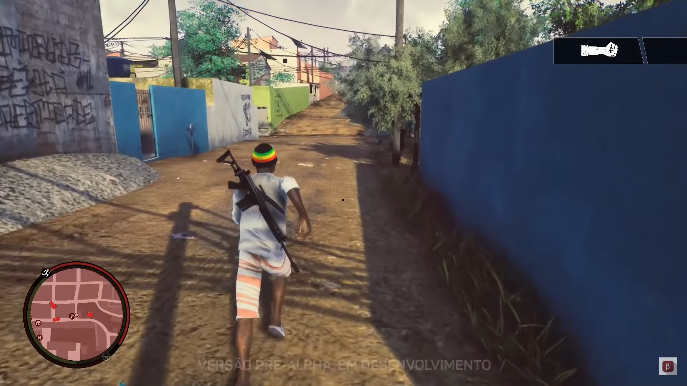
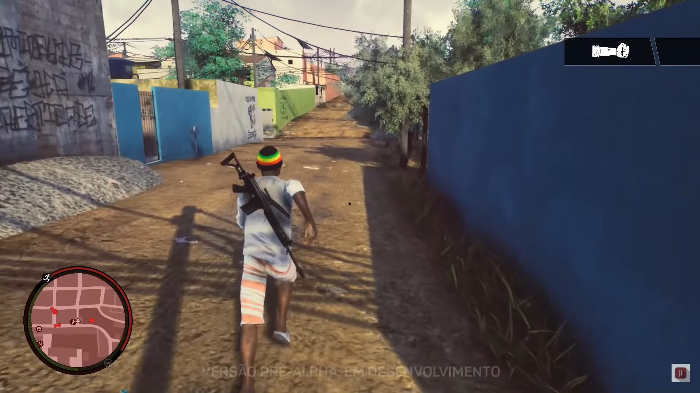

Para una mayor inmersión
PUBG: BATTLEGROUNDS es un shooter de estilo Battle Royale en el que 100 jugadores se enfrentan entre sí hasta que solo queda uno. Encuentra y saquea armas, vehículos y objetos en un campo de batalla que se reduce lentamente y supera a tus contrincantes para convertirte en «el último superviviente».
PUBG es un FPScon posibilidad de jugar en modo TPS, es decir, viendo al personaje desde la perspectiva que nos brindan sus ojos o desde un punto de vista más alejado, viendo al personaje que encarnamos a una distancia corta pero ajena a su punto de vista. En este juego, la nomenclatura que se utiliza es distinta de la habitual:
FPP : First Person Perspective, o perspectiva en primera persona, es el nombre que se le da al modo FPS.
TPP : Third Person Perspective, en español perspectiva en tercera persona, que corresponde al TPS.

 


PUBG es un videojuego de acción en el cual hasta 100 jugadores pelean en una Batalla Real (Battle Royale), un tipo de combate a muerte en el cual hay enfrentamientos para ser el último con vida. Los jugadores pueden ingresar a la partida en solitario, o con un pequeño equipo compuesto por el propio jugador y una, dos o tres personas más, formando respectivamente un dúo, un escuadrón de tres o cuatro jugadores. La última persona o equipo con vida gana la partida.
| Rifles de Asalto | Subfusiles | Fusiles de tirador designado | Fusiles de francotirador | Ametralladora ligera | Escopetas |
|---|---|---|---|---|---|
| M16A4 | UMP45 | SKS | AWM | M249 | S686 |
| M416 | Micro UZI | VSS | Kar98K | DP-28 | S1897 |
| Scar-L | Vector | QBU | M24 | MG3 | S12K |
| AKM | Tommy Gun | Mini 14 | Win 94 | DBS | |
| G36C | PP-19 | MK14 | Mosin Nagant | Sawed-off |
Controversia sobre la cadencia de disparo de las armas automáticas
A inicios de 2019, jugadores de la versión original de PUBG reportaron un problema que consiste en que la cadencia de disparo programada para las armas del juego quedaba reducida a un valor dependiente de los fotogramas por segundo, afectando el desempeño de las mismas y creando desequilibrio en el gameplay, de la siguiente manera:
Tomemos como ejemplo el M416, que tiene un tiempo entre disparos programado de 0,08571 segundos (85,71 ms, que equivale a 700 tiros por minuto). A 60 FPS el tiempo de fotogramas es de 16,67 ms. El motor del juego solo disparará el arma si al acabar dicho tiempo entre disparos el "trigger" coincide exactamente con la renderización de un nuevo fotograma, y no entre uno y otro. Entonces, para que el M416 dispare en modo automático a 60 FPS el motor tendrá que aumentar el tiempo entre disparos hasta que coincida con el múltiplo exacto de 16,67 ms más cercano, que en este ejemplo es 100ms (equivalente a una cadencia de disparo de 600 tiros por minuto, una reducción del 15,3% en la cadencia efectiva). Así, el tiempo entre disparos real que obtendremos dependerá del tiempo entre fotogramas correspondiente a los FPS actuales.
Posteriormente, los desarrolladores explicaron que se trata de una condición intrínseca a la implementación de la lógica de fuego automático en la programación de todos los videojuegos del género shooter. Dado que es un problema a nivel de motor (en PUBG, Unreal Engine) todos los juegos desarrollados a partir de este adolecen de tal problema, como son todas las versiones de PUBG (incluso las destinadas a teléfonos móviles) y otros juegos como Fortnite. Este problema fue mitigado en PUBG de Steam y consolas con la actualización 4.1, mejorando la consistencia del fuego automático a bajos FPS y devolviendo las cadencias de tiro al valor programado. Una solución similar fue aplicada en la versión 1.11 de la edición china de PUBG para móviles ("Game For Peace") y en la actualización 1.5.0 de la versión global de PUBG Mobile, sin embargo a algunas armas se les ha cambiado la cadencia de tiro programada a un valor distinto del que tienen en PUBG de PC y consolas.